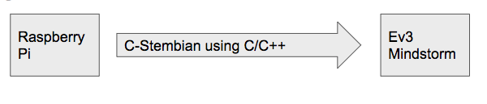
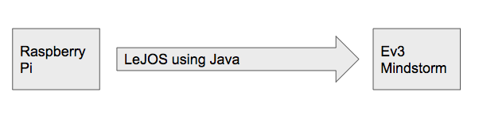
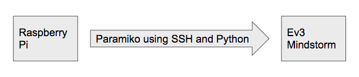

The beginning of the 2020 SEAP internship program at Crane, Indiana.
The task is to create a mother-daughter bot system, where the mother and multiple daughter bots can communicate over long distances through radio frequency waves. The mother must be able to tell the daughter bot a command, and the daughter bots must execute said command.
The basic relay idea was immediately clear to be the correct idea when the problem was presented. The communication distances which the daughter robot and mother robot needed to communicate at were clearly too long for direct communication; thus a need for a relay became immediately clear.

Interns began with an on-road focused robot design eventually making a rear wheel drive tire based development platform
Decided to cable in information from the Micro:bit to the Raspberry Pi on the daughter bot. This is done by attaching an additional Micro:bit on the daughter bot as well.
With the development of the mother robot complete, focus shifted to the payload carrying daughter. This robot began its development cycle with a strong off road basis. This robot would be deployed where the mother robot could not go, and would carry out its given mission via its particular payload. (in this particular circumstance color detection)
Decided to use C-Stembian, a public and free operating system that allows connection between Raspberry Pi's and Mindstorm bricks. This will allow for the completion of the relay system, connecting the radio signal from the micro:bits to be received by the Mindstorm brick.
Trailer Concept took place of a roof based deployment strategy. Upon a mid-cycle review the roof deployment design was tested and this design showed little chance of a reliable deployment; upon this discovery and at the recommendation of Cory Bergsrud, Crane interns looked into the development of a trailer. This development led to a reusable design concept.

C-Stembian was unfamiliar to the group due to the requirement of writing scripts in C/C++. Furthermore, the bluetooth capabilities of C-Stembian were lackluster. LeJOS (written in Java) is now being used.
The team presented their preliminary design review to Mrs. Closser as well as Dr. Cory Bergsrud.
The Pin and Gravity System we were developing to captively hold the relays to the daughter upon review showed a lack of actual holding power. This led to a development based on mounted hooks interfacing with the chain and a feature on the relay.

LeJOS required flashing the Ev3 which added a new layer of complexity. Connection is now being done through Paramiko, an SSH client that allows for simple and easy communication between the Raspberry Pi and the EV3 Mindstorm.
